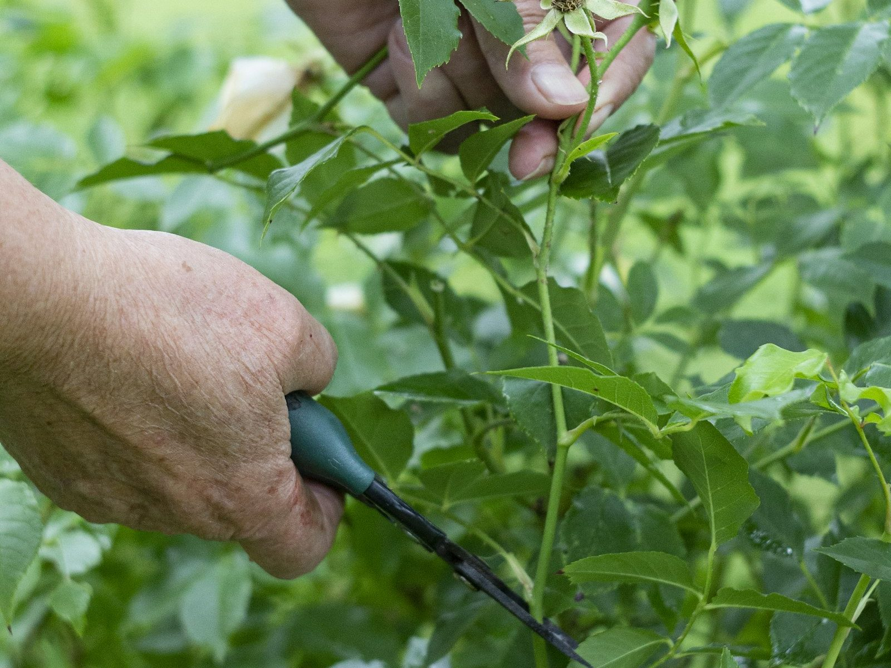
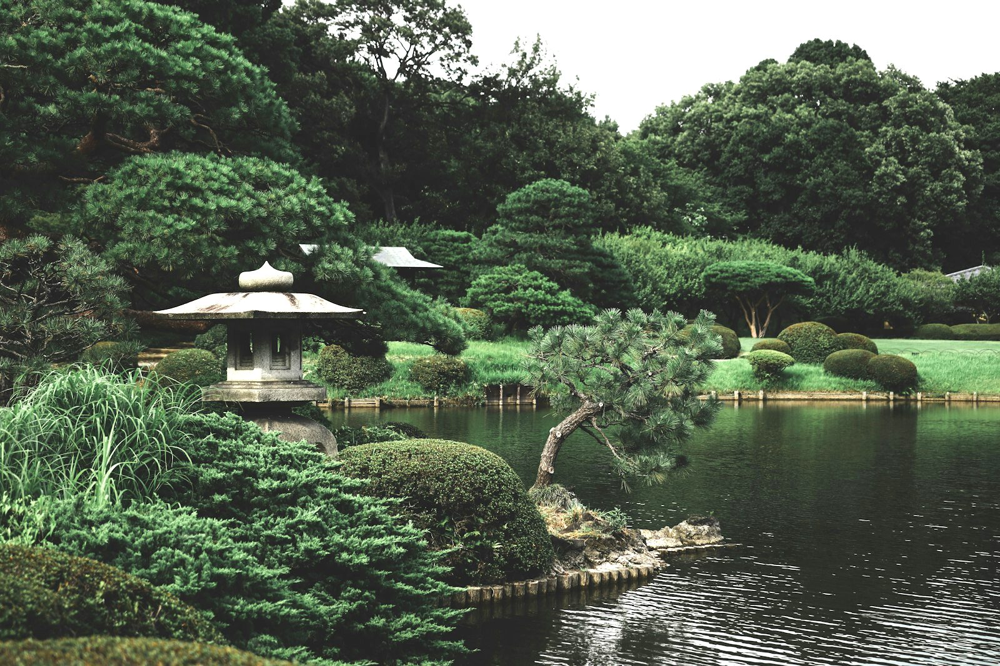
- 3位造園技能の
大会 2024年・県の技能競技大会 - 20年地域で営業1990年代から
防府市で - 1級造園技能士国家資格
point
選ばれる理由
はじめての
- 01
木1本から
お受けします 小さな
ご依頼も 大歓迎です。 まずは お気軽に ご相談ください。 - 02
下見の
うえで 見積もり お庭を
見て、 作業内容と 金額を お出しします。 納得してから 決められます。 - 03
終わったら
一緒に 確認 仕上がりを
一緒に 確かめ、 気に なる所は 直します。
photo
お庭の写真
手が
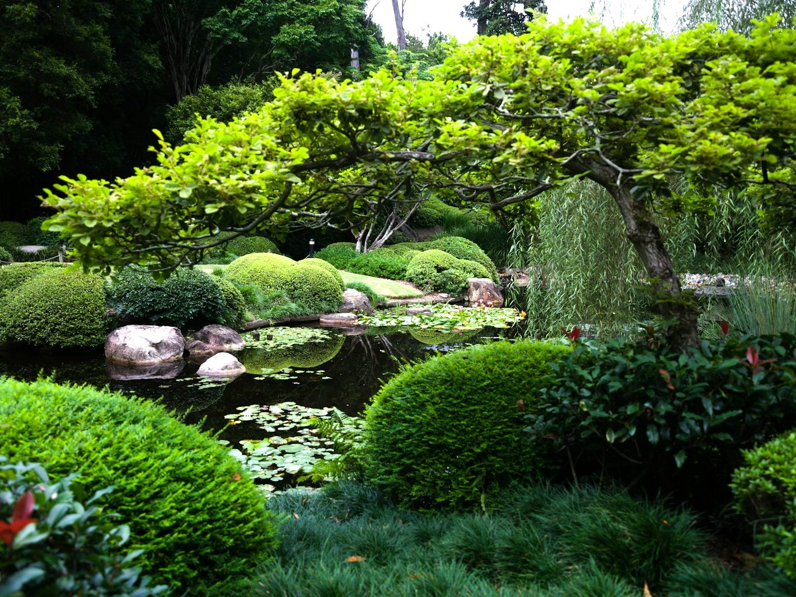
松の剪定防府市 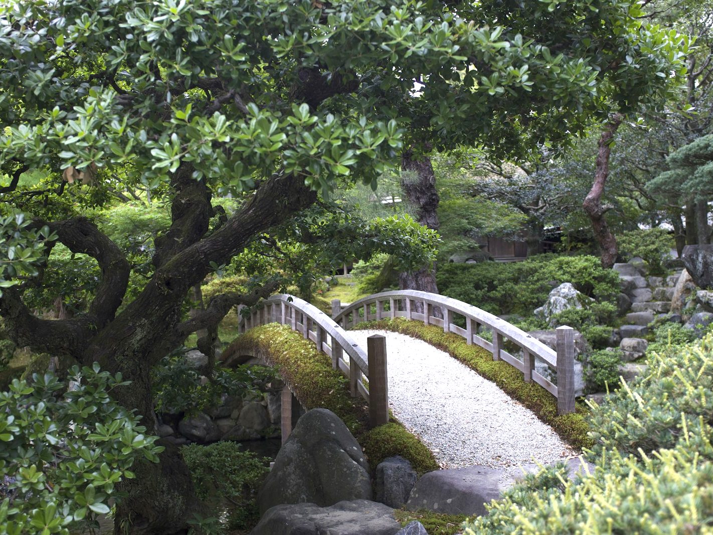
庭づくり防府市 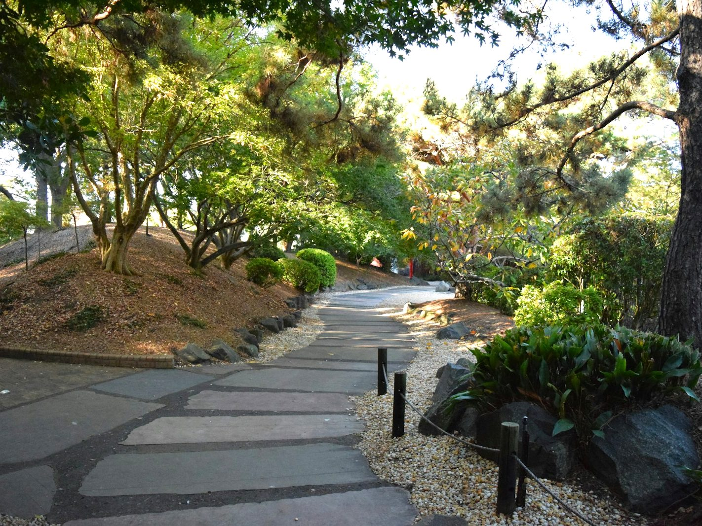
門まわりの 外構 山口市伐採のあと防府市
横に
estimate
料金の目安
本数や回数を
- 庭木の
剪定 1本あたりの（低木・高さ2mまで） 目安 3,300円／本 - 庭木の
剪定 （中木・高さ2〜4m） 7,700円／本 - 生け垣の
刈り込み 長さ1mあたり1,100円／m - 5,500円
- 2,200円
合計の目安（税込）
目安の
works
施工例
作業の
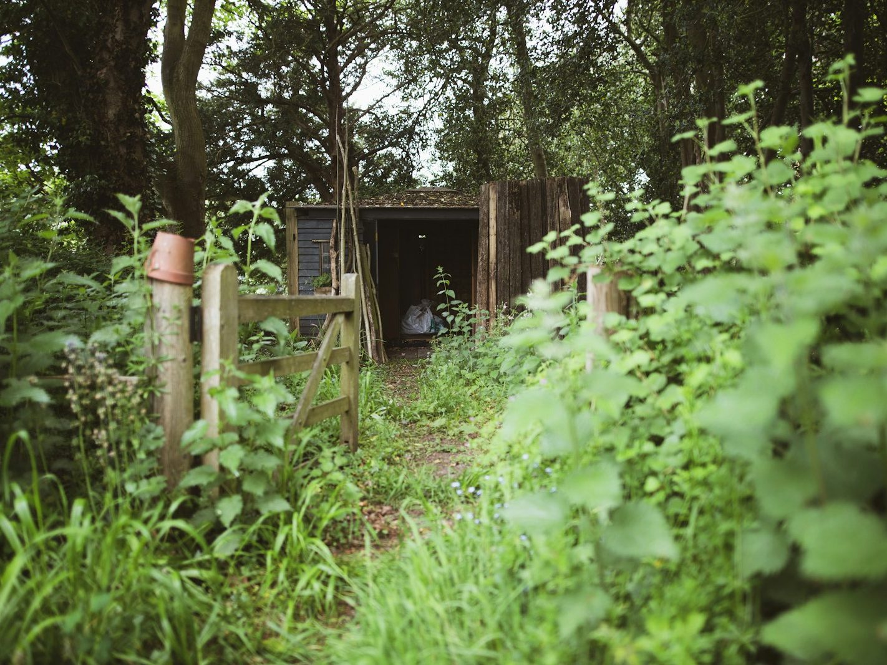
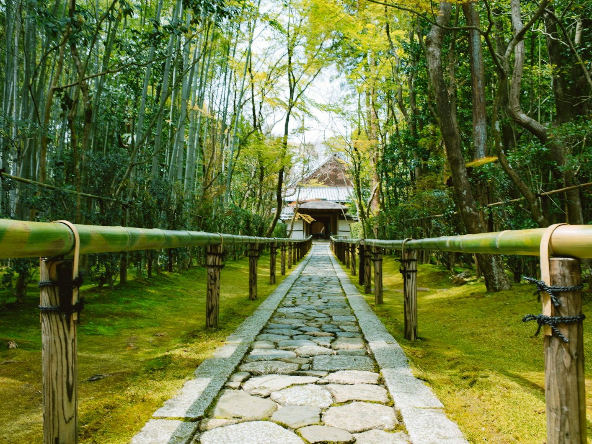
黒松の剪定と、生け垣の刈り込み
何年か
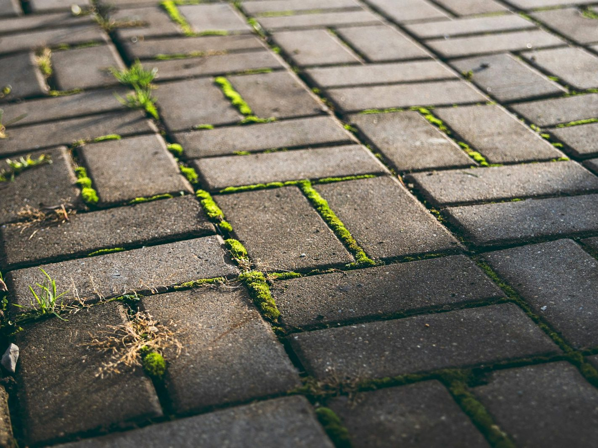
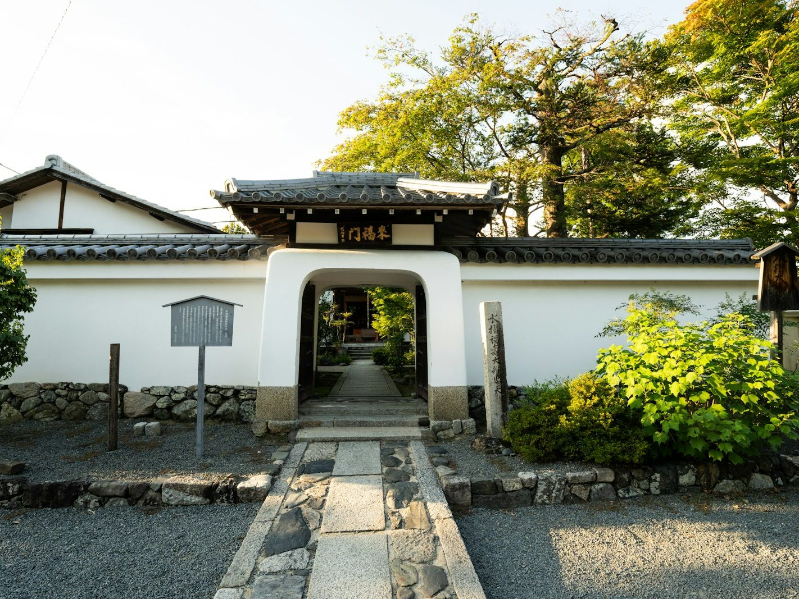
玄関まわりの砂利敷きと飛び石
雨の
before / after
作業の前と後
つまみを
作業前作業後
黒松の
voice
お客様の声
ご依頼いただいた
防府市・60代庭木が
見違える ほど すっきりしました。 説明も 丁寧で 安心できました。
防府市・40代見積もりの
内容が 分かりやすく、 追加の 請求も ありませんでした。
※ご本人の
flow
ご依頼の流れ
ご相談
お庭の
様子と、 気に なっている ことを お知らせ ください。 下見
お庭を
見せていただき、 ご希望を うかがいます。 お見積もり
作業の
内容と 金額を お出しします。 ご納得いただいてから 決めてください。 作業
日程を
決めて 作業します。 終わったら 一緒に 仕上がりを 確かめます。
news
お知らせ
- お知らせホームページを
新しくしました - 作業秋の
剪定の ご依頼を 受け付けています - お休み9/23は
休ませていただきます
これまでのお知らせ
- お休みお盆休みの
お知らせ
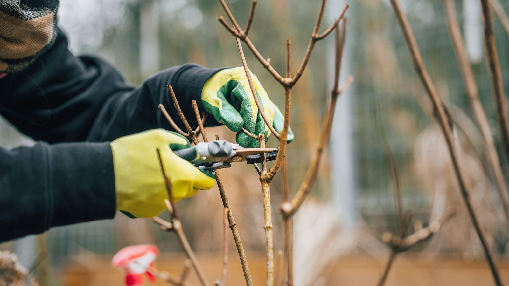
contactご相談・
ご相談・お問い合わせ
お庭の
hours
受付時間
| 月 | 08:00〜17:00 |
|---|---|
| 火 | 08:00〜17:00 |
| 水 | 08:00〜17:00 |
| 木 | 08:00〜17:00 |
| 金 | 08:00〜17:00 |
| 土 | 08:00〜12:00 |
| 日 | 定休日 |
作業中は
area
対応エリア
防府市を
- 防府市
- 山口市
- 周南市
- 宇部市
上記以外の
about松葉造園に
松葉造園について
- 店名
- 松葉造園
- 住所
- 山口県防府市〇〇町1-2-3
- 営業時間
- 8:00〜18:00
- 定休日
- 日曜日
- 対応エリア
- 〇〇県内
- お仕事
- 剪定・庭づくり・外構・伐採
- ご依頼
- 個人の
お宅・ 会社や 施設の どちらも
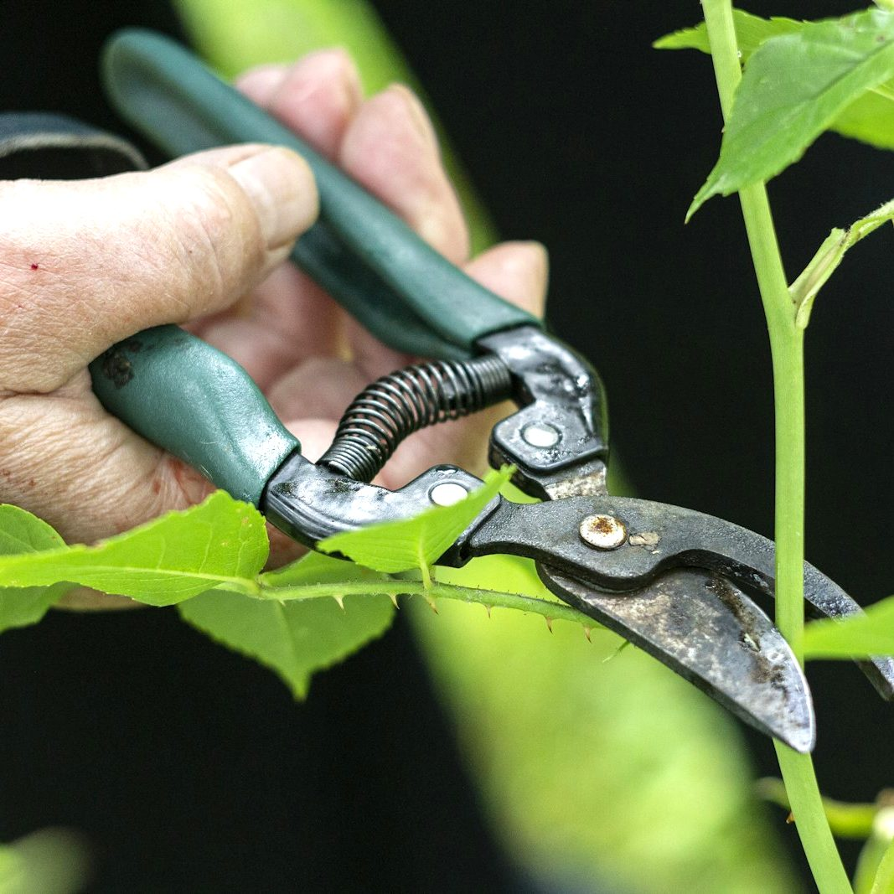
q & aよくある
よくあるご質問
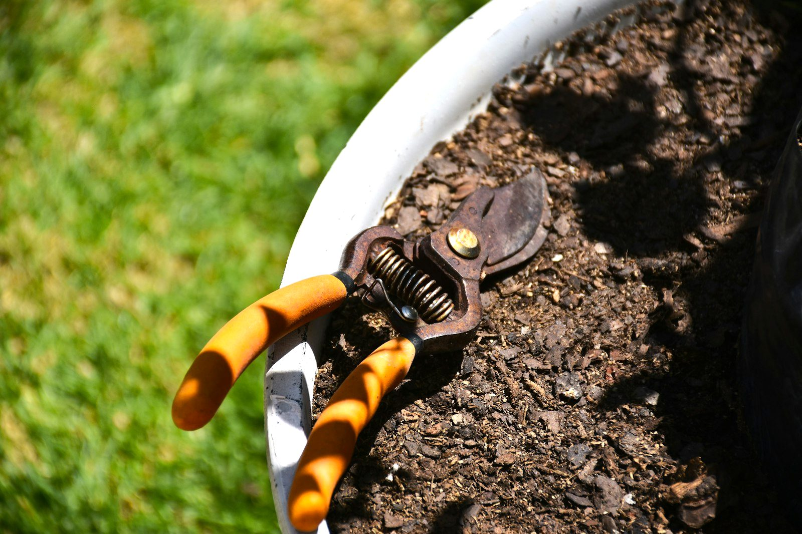
Q木1本だけでも頼めますか？
Aはい、
Q会社や施設のお庭もお願いできますか？
Aはい、
Qどこまで来てもらえますか？
A防府市を
Q料金はどれくらいかかりますか？
Aお庭の